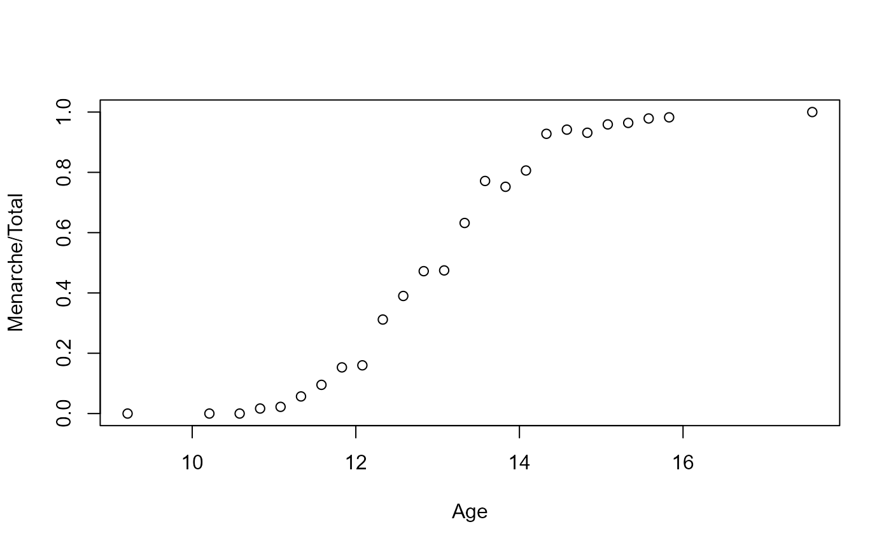

rglmb.Rdrglmb is used to generate iid samples for Bayesian Generalized Linear Models.
The model is specified by providing a data vector, a design matrix,
the family (determining the likelihood function) and the pfamily (determining the
prior distribution).
number of draws to generate. If length(n) > 1, the length is taken to be the number required.
a vector of observations of length m.
for rglmb a design matrix of dimension m * p and for print.rglmb the object to be printed.
a description of the error distribution and link
function to be used in the model. For glm this can be a
character string naming a family function, a family function or the
result of a call to a family function. For glm.fit only the
third option is supported. (See family for details of
family functions.)
a description of the prior distribution and associated constants to be used in the model. This
should be a pfamily function (see pfamily for details of pfamily functions).
this can be used to specify an a priori known component to be included in the linear
predictor during fitting. This should be NULL or a numeric vector of length equal to the number of
cases. One or more offset terms can be included in the formula instead or as well, and
if more than one is specified their sum is used. See documentation for model.offset at
model.extract.
an optional vector of ‘prior weights’ to be used
in the fitting process. Should be NULL or a numeric vector.
the number of significant digits to use when printing.
For glm: arguments to be used to form the default
control argument if it is not supplied directly.
For weights: further arguments passed to or from other methods.
rglmb returns a object of class "rglmb". The function summary
(i.e., summary.rglmb) can be used to obtain or print a summary of the results.
The generic accessor functions coefficients, fitted.values,
residuals, and extractAIC can be used to extract
various useful features of the value returned by rglmb.
An object of class "rglmb" is a list containing at least the following components:
a matrix of dimension n by length(mu) with one sample in each row
a vector of length(mu) with the estimated posterior mode coefficients
Either a constant provided as part of the call, or a vector of length n with one sample in each row.
A list with the priors specified for the model in question. Items in the list may vary based on the type of prior
a vector of weights specified or implied by the model
a vector with the dependent variable
a matrix with the implied design matrix for the model
Family functions used during estimation process
an n by 1 matrix giving the number of candidates generated before acceptance for each sample.
the envelope that was used during sampling
Dobson, A. J. (1990) An Introduction to Generalized Linear Models. London: Chapman and Hall.
Hastie, T. J. and Pregibon, D. (1992) Generalized linear models. Chapter 6 of Statistical Models in S eds J. M. Chambers and T. J. Hastie, Wadsworth & Brooks/Cole. McCullagh P. and Nelder, J. A. (1989) Generalized Linear Models. London: Chapman and Hall.
Nygren, K.N. and Nygren, L.M (2006) Likelihood Subgradient Densities. Journal of the American Statistical Association. vol.101, no.475, pp 1144-1156. doi: 10.1198/016214506000000357.
Raiffa, Howard and Schlaifer, R (1961) Applied Statistical Decision Theory. Boston: Clinton Press, Inc.
Venables, W. N. and Ripley, B. D. (2002) Modern Applied Statistics with S. New York: Springer.
lm and glm for classical modeling functions.
family for documentation of family functions used to specify priors.
pfamily for documentation of pfamily functions used to specify priors.
Prior_Setup, Prior_Check for functions used to initialize and to check priors,
summary.glmb, predict.glmb, residuals.glmb, simulate.glmb,
extractAIC.glmb, dummy.coef.glmb and methods(class="glmb") for glmb
and the methods and generic functions for classes glm and lm from which class glmb inherits.
data(menarche2)
summary(menarche2)
#> Age Total Menarche
#> Min. : 9.21 Min. : 88.0 Min. : 0.00
#> 1st Qu.:11.58 1st Qu.: 98.0 1st Qu.: 10.00
#> Median :13.08 Median : 105.0 Median : 51.00
#> Mean :13.10 Mean : 156.7 Mean : 92.32
#> 3rd Qu.:14.58 3rd Qu.: 117.0 3rd Qu.: 92.00
#> Max. :17.58 Max. :1049.0 Max. :1049.00
plot(Menarche/Total ~ Age, data=menarche2)

Age2=menarche2$Age-13
x<-matrix(as.numeric(1.0),nrow=length(Age2),ncol=2)
x[,2]=Age2
y=menarche2$Menarche/menarche2$Total
wt=menarche2$Total
mu<-matrix(as.numeric(0.0),nrow=2,ncol=1)
mu[2,1]=(log(0.9/0.1)-log(0.5/0.5))/3
V1<-1*diag(as.numeric(2.0))
# 2 standard deviations for prior estimate at age 13 between 0.1 and 0.9
## Specifies uncertainty around the point estimates
V1[1,1]<-((log(0.9/0.1)-log(0.5/0.5))/2)^2
V1[2,2]=(3*mu[2,1]/2)^2 # Allows slope to be up to 3 times as large as point estimate
out<-rglmb(n = 1000, y=y, x=x, pfamily=dNormal(mu=mu,Sigma=V1), weights = wt,
family = binomial(logit))
summary(out)
#> Warning: non-integer #successes in a binomial glm!
#> Call
#> NULL
#>
#> Prior Estimates with Standard Deviations
#>
#> Prior.sd Approx.Prior.wt
#> [1,] 0.0000 1.0986 0.003
#> [2,] 0.7324 1.0986 0.003
#>
#> Bayesian Estimates Based on 1000 iid draws
#>
#> Post.Mode Post.Mean Post.Sd MC Error Pr(tail)
#> [1,] -0.01070 -0.01327 0.06348 0 0.407592
#> [2,] 1.62939 1.63392 0.05990 0 0.000999 ***
#> ---
#> Signif. codes: 0 '***' 0.001 '**' 0.01 '*' 0.05 '.' 0.1 ' ' 1
#>
#> Distribution Percentiles
#>
#> 1.0% 2.5% 5.0% Median 95.0% 97.5% 99.0%
#> [1,] -0.16204 -0.13497 -0.11734 -0.01585 0.09133 0.11224 0.134
#> [2,] 1.50653 1.52379 1.54178 1.63247 1.73021 1.74606 1.776
# Add mean(out$iters to rglmb summary function)
mean(out$iters)
#> [1] 1.285